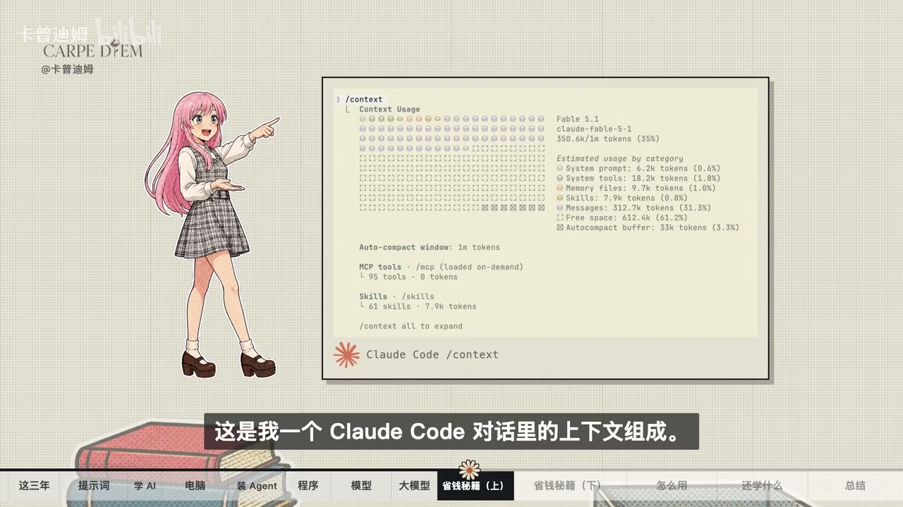

原视频 · 在线回看
点击后联网加载 B 站播放器；本地不下载整段视频。

原视频 · 在线回看
点击后联网加载 B 站播放器；本地不下载整段视频。
原标题：【Re:从零开始的AI学习】第一季总集篇｜从入门到用好 AI
UP 主：卡普迪姆
时长：54 分 57 秒
链接：https://www.bilibili.com/video/BV1VZWc6dECG/
阅读强度：深度
学 AI 可以从一个真实问题开始：先问一次，记下回答；学会补充背景、使用工具和检查证据以后，再问同一个问题。这个合集沿途用薯片、整理照片和会议录音等例子解释提示词、模型、智能体、上下文与缓存。产品功能、价格与性能会变化，文中的具体使用体验属于录制时的案例。
朋友说去便利店，你请她“带包薯片”，她拿回抹茶味。你想吃黄瓜味，但没有说出来。换成“带一包乐事黄瓜味”，再加上“第二包半价就带两包”，目标和条件就清楚多了。提示词也承担类似作用：说明你想做什么、提供必要背景，并交代结果格式或限制。
比如“帮我处理表格”很难判断成功标准；补充表格内容、想算出的结果、需要的格式，才方便检查。描述清楚能减少歧义，仍不能保证执行者一定正确。合集还提出两个窗口的练习：一个负责做事，另一个帮助修改任务说明。工作窗口出现偏差时，把问题和实际输出交给第二个窗口讨论，再自行检查它提出的原因与修改建议。
入门练习可以很简单：重新问一遍老问题，加上自己的工作背景、最困扰的重复任务和期望的回答格式。先猜猜答案会有什么变化，随后比较两次结果，看看新增信息是否真的帮助解决问题。
聊天练习可以从手机或普通电脑开始；需要访问文件、运行程序和操作桌面时，电脑通常更方便。很多应用通过网络调用远端模型，电脑运行客户端和工具；本地运行或训练模型则有不同的硬件需求，可能需要足够的显存。先明确任务，再决定是否添置设备，也要考虑网络、隐私和实际费用。
首次使用智能体时，合集先打开一款应用，选定模型，问“我不会写代码，想学 AI，有什么建议？”接着请它按照第一性原理与费曼学习法，带自己练习应用的基础功能。遇到陌生词就继续追问，再亲自操作。工具名称、界面与免费额度可能改变；同类工具也有各自的权限和操作差异。
这里可以区分两层：模型根据输入生成输出；应用或运行框架负责对话界面、工具连接、权限和执行流程。一种常见的智能体组合会让模型选择下一步，再由框架执行允许的工具调用并返回结果。具体能力取决于应用提供了什么、用户授权了什么，不能只看模型名称。
假设有几百张照片，文件名是 IMG0001 之类，希望按拍摄日期重命名，再按月份归档。可以请智能体编写脚本：读取照片日期，按“日期加序号”的格式生成文件名，再放进月份文件夹。下一批照片到来时，经过验证的脚本还可以再次使用。
程序按写下的规则运行，但规则或代码可能有错误，照片也可能缺日期、出现同名冲突。实际处理珍贵文件前，先备份，要求列出拟执行的改名结果，用少量副本试运行，再核对数量和异常。这样既利用批量处理，也保留发现问题和恢复的机会。
会议录音的例子再进一步：语音识别模型把声音转成文字，大语言模型从文字中提取待办，程序负责串联步骤并汇总成表。语音识别和待办提取都可能出错，重要事项需要对照录音确认。
函数可以理解为输入与输出之间的一种关系。y = x + 1 接收 3 得到 4，接收 100 得到 101；规则由人明确写出。照片脚本也有规则，例如读到八月的拍摄日期就归入八月文件夹。
语音识别难以靠几条简单规则完成：同一句话由不同人说、在安静房间或嘈杂街道说，声波都可能不同。训练语音模型时可以利用大量声音与文字等数据，让模型学到从声音到文字的映射。模型仍通过程序运行；这里的区别在于部分行为来自训练得到的参数，方便理解两种构造方法怎样结合。
大语言模型也能用不同输入完成多种任务：给一段评论要求判断情感，换一个指令就翻译或总结。结果质量仍要逐项检查。某些应用还能接收图片或调用图像生成工具，但具体能做什么取决于模型和产品配置。
模型处理文本时会使用 token。它不等于一个汉字或一个英文单词：不同分词器可能把同一段文字切成不同数量的 token。实际费用还取决于服务的计费方式、输入输出数量和缓存规则，订阅产品也可能采用额度等其他方式。
对话中的“继续写”看起来只有三个字，应用为了让模型接上前文，可能一并提交历史消息、系统指令和工具定义。上下文就是本次处理时提供给模型的材料；每种模型和应用对可容纳内容有上限。长对话中的旧要求可能被遗漏，压缩摘要也可能丢细节。
不相关的话题可以另开对话；同一任务需要反复使用同一份材料时，保留相关上下文更方便。需要转场时，请助手整理目标、已定事项和剩余工作，自己核对后带到新会话。筛选日志时保留判断问题所需的信息，不能为了省 token 删掉关键上下文。
设第一轮请求是 A，第二轮是 A+B，第三轮是 A+B+C。如果服务支持前缀缓存，并且前面的内容与缓存匹配，第三轮有机会复用 A+B 对应的计算。假设总共 10000 token，其中 9000 与可复用前缀匹配，命中比例可接近 90%；这是解释方法，具体统计与收费由服务决定。
修改前面的系统指令、工具定义或历史内容，可能使前缀不再匹配；缓存也可能过期。缓存过期意味着相关计算可能需要重建，不能直接推断对话记录已经丢失。保存时间、切换模型和调整设置的影响各不相同，实际要查所用服务的规则。
缓存命中率也不能单独衡量智能体能力。子智能体可能在独立上下文查资料，再将结果带回主任务；这样可能新增未命中的输入，也可能减少主线程承载的资料。判断价值时一起看任务是否完成、结果质量、总耗时和总费用。
生成内容可能语气自信却包含虚构信息。菜谱灵感出错与药物、农药或财务决策出错，后果差别很大。重要问题需要核对权威原始资料并寻求相应专业意见；多问几个 AI 可以暴露分歧，答案一致也可能共享同一错误来源。
对于会变化的信息，检查产品这一轮是否实际使用搜索工具、给出哪些来源，再打开原文核对。也要检查提问里的前提：问“同事为什么嫉妒我”，可能得到一份看似有条理的解释，却没有证据证明对方嫉妒。可以追问“还有哪些解释？什么证据会让我改变判断？”
同样，编程助手声称“修改了 20 个文件，测试通过”，仍值得追问改动原因、测试覆盖范围和性能是否有测量。学习基础知识使人更有能力提出这些问题、理解结果，并决定下一步。
合集用调热水比喻学习率：旋钮每次只动一点，温度可能调整得很慢；一下拧得太大，又可能在冷热之间反复摆动。机器学习中的学习率控制参数更新的步长，这里的生活比喻用来提醒自己面对新工具时保持有反馈的调整，而非把人的学习完整等同于模型训练。
看到新名词时，可以先了解它解决什么问题，再拿自己的小任务试一试。觉得有用就继续深入，暂时无关就放下，发现原先理解有误就修正。回到最初记录的那个问题：这次补充背景、请求指出潜在错误，再比较回答和证据，看看自己形成了怎样的判断。
从任务说明开始，逐步理解模型与工具如何协作，用程序处理可明确规定的重复步骤，理解上下文与缓存的费用关系，最后依据错误后果检查结果。这些概念串起来，就能更有意识地使用智能体。
提示词 ；设备与第一次使用 ；照片与程序 ；模型与函数 ；上下文 ；缓存 ；证据与判断 ；学习节奏 。
怎样把“整理照片”写成可以检查的任务？缓存命中率高能说明哪些事，又不能说明哪些事？当两个 AI 给出相同建议时，下一步怎样核验？